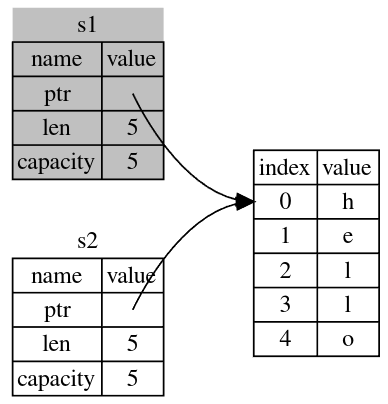

introduction
Quick Look
Basic
- Expressions returns something, statements don't.
Getting Started
Writing a program
This is how a "Hello Ferris!" program looks like in Rust:
fn main() { println!("Hello, Ferris!"); }
Create a file named "hello.rs" and then open your terminal in that directory. Now compile your program with rustc hello.rs and run it with ./hello. It will output: Hello, Ferris!(Ferris is the Rust programming language's unofficial mascot).

-
In our program:
-
we have the main function starting with
fn main() {and ending at}. It takes no parameters, which is why the()(parentheses) are empty. -
println!calls a Rust macro. If it had called a function instead, it would be entered asprintln(without the !). -
We pass this
"Hello, Ferris!"as an argument toprintln!, and the string is printed to the screen. -
We end the line with a semicolon (
;), which indicates that this expression is over. -
NOTE: The order in which functions are written doesn't matter but macros have to appear before they are used.
-
Cargo
Cargo is Rust's build system and package manager. We use it when we have to use any dependencies. Our previous program was simple so we did not need cargo.
-
Let's get familiar with cargo:
- First make sure that cargo is installed. Try running:
cargo --version - Help:
cargo --helpor - If manpages are installed:
man cargo
- First make sure that cargo is installed. Try running:
-
Creating our first cargo project:
-
Run
cargo new hello_cargo: This will create a new cargo project directory namedhello_cargowhich contains:- "Cargo.toml" file is Cargo's configuration file written in TOML(Tom's Obvious, Minimal Language) format:
[package] name = "hello_cargo" version = "0.1.0" edition = "2021" [dependencies]The first line, [package], is a section heading that indicates that the following statements are configuring a package. As we add more information to this file, we’ll add other sections.
The next three lines set the configuration information Cargo needs to compile your program: the name, the version, and the edition of Rust to use.
The last line, [dependencies], is the start of a section for you to list any of your project’s dependencies. In Rust, packages of code are referred to as crates. We won’t need any other crates for this project, but we will use it later.
-
"Cargo.lock" file keeps track of the exact versions of dependencies in your project. This project doesn’t have dependencies, so the file is a bit sparse. You won’t ever need to change this file manually; Cargo manages its contents for you.
-
"src/main.rs": Cargo contains a dir "src" for source files. The top-level project directory is just for README files, license information, configuration files, and anything else not related to your code. By default the "main.rs" file has:
fn main() { println!("Hello, world!"); } -
While you are inside your Cargo project dir. You can do the following:
- Build(compile) our program with
cargo build - Run it with
./target/debug/hello_cargo - Or both build and run with
cargo run - Or just check our program for errors with
cargo checkwithout having to compile and or run. It just checks your code but doesn't create an executable - When your project is finally ready for release, you should use
cargo build --releaseto compile it with optimizations. This creates an executable undertarget/releaseinstead oftarget/debug. It is slower as compared to justcargo build
- Build(compile) our program with
-
Tips
You might come across some rusty projects on github that require you to build the project from scratch to install it for which you usually have to follow the steps similar to:
$ git clone example.org/someproject
$ cd someproject
$ cargo build
Usually people just open an editor to edit the source code and a terminal to build the project in which case you could just use "cargo-watch". It watches over your project's source for changes, and runs Cargo commands when they occur.
Install: cargo install cargo-watch
Use: cargo watch(inside the project dir)
Now all you have to do is edit the source code and save the file if you have to build the changes.
Programming A Guessing Game
We’ll implement a guessing game. Here’s how it works: the program will generate a random integer between 1 and 100. It will then prompt the player to enter a guess. After a guess is entered, the program will indicate whether the guess is too low or too high. If the guess is correct, the game will print a congratulatory message and exit.
Create a new project dir with cargo new guess and now let's think how we're going to implement the core functionality, generating a random number. Here we will use the capabilities of cargo that we didn't use before. Google search " rust crate rand ". This crate helps us generate random numbers. You'll find instructions there on how to add this dependency to our program. Let's do that.
We need to edit our "Cargo.toml" file to add a dependency:
Read about semantic versioning here
Comments in TOML start with #(pound). The line rand = "0.8.4" adds the rand crate from crates.io and any other crates rand requires.
For our game we need to:
-
To obtain user input we need the io library with
use std::io -
We add the line
use rand::Rng. TheRngtrait defines methods that random number generators implement, and this trait must be in scope for us to use those methods. -
By default, Rust has a set of items defined in the standard library that it brings into the scope of every program. This set is called the prelude, and you can see everything in it in the standard library documentation. The io library isn't present in the prelude
Filename: src/main.rs
use rand::{thread_rng, Rng}; use std::cmp::Ordering::{Equal, Greater, Less}; fn main() { let random: u32 = thread_rng().gen_range(1..=9); println!("Secret number: {random}"); loop { println!("Guess the number: "); let mut guess = String::new(); std::io::stdin().read_line(&mut guess).unwrap(); match guess.trim().parse::<u32>().unwrap().cmp(&random) { Greater => println!("Too large"), Less => println!("Too small"), Equal => { println!("You won!"); break; } } } }
- Both variables and references are immutable by default while constants are always immutable
read_line()returnsResultwhich is an enum type that has the variantsOkandErrand it's own methods defined on it.- Note: You won’t just know which traits to use and which methods and functions to call from a crate, so each crate has documentation with instructions for using it. Another neat feature of Cargo is that running the cargo doc --open command will build documentation provided by all of your dependencies locally and open it in your browser. If you’re interested in other functionality in the rand crate, for example, run cargo doc --open and click rand in the sidebar on the left.
Common Programming Concepts
Mutability
fn main() { let x = 5; println!("The value of x is: {x}"); x = 6; println!("The value of x is: {x}"); }
Error
Compiling l01-variables-are-immutable v0.1.0 (/home/zim/github/the_rust_book/listings/03_common_concepts/l01-variables-are-immutable)
error[E0384]: cannot assign twice to immutable variable `x`
--> src/main.rs:5:5
|
3 | let x = 5;
| -
| |
| first assignment to `x`
| help: consider making this binding mutable: `mut x`
4 | println!("The value of x is: {x}");
5 | x = 6;
| ^^^^^ cannot assign twice to immutable variable
For more information about this error, try `rustc --explain E0384`.
error: could not compile `l01-variables-are-immutable` due to previous error
The above code doesn't compile. To make it compile we'll have to make "x" mutable using: let mut x = 5.
Constants
- Always immutable
- Type of the value must be annotated
- can be declared in any scope
- can only be set to a constant expression, not the result of a value that could only be computed at runtime. Read Constant Evaluation.
- always written in uppercase and underscores are used to separate words
- Example:
#![allow(unused)] fn main() { const THREE_HOURS_IN_SECONDS: u32 = 60 * 60 * 3; //set to a constant expression }
Shadowing
Let's not waste variable names ; ) We can even change the type of variables
fn main() { let x = "four"; { let x = x.len(); println!("The length of string 'x' is: {x}"); } println!("Five is greater than {x}"); }
Output
Compiling l02-shadowing v0.1.0 (/home/zim/github/the_rust_book/listings/03_common_concepts/l02-shadowing)
Finished dev [unoptimized + debuginfo] target(s) in 0.66s
Running `target/debug/l02-shadowing`
The length of string 'x' is: 4
Five is greater than four
Datatypes
- Rust has four primary scalar types: integers, float, boolean, and characters.
- Length of types
isize&usizedepends upon the underlying architecture(32bit or 64bit) - Each variant of an Integer type can be signed(
i8) or unsigned(u8) - Rust’s char type is four bytes in size and represents a Unicode Scalar Value, which means it can represent a lot more than just ASCII.
- Rust's tuple type: ex-
let tup: (i32, f64, u8) = (500, 6.4, 1); - The tuple without any values has a special name, unit. This value and its corresponding type are both written
()and represent an empty value or an empty return type. Expressions implicitly return the unit value if they don’t return any other value.. - Array's in Rust are homogenous
let a: [i32; 5] = [1, 2, 3, 4, 5]; let a = [3; 5];crates an array[3, 3, 3, 3, 3]
Invalid Array Element Access
Let's say you have an array in a program with 5 elements and take user input to access a certain element. If the user inputs "6" to access the 6th element which isn't present in the array, Rust will panic during Run Time. This error won't be caught during compilation. Some languages let you access invalid memory but Rust doesn't. It soon panics and exits.
Functions
- Type annotations for parameters are mandatory.
Common
-
Common functions
clone():is_ok():is_some():iter():unwrap():
-
Common macros
format!():panic!():
Statements & Expressions
- Statements are instructions that perform some action and do not return a value. Expressions evaluate to a resulting value. Let’s look at some examples.
Comments
#![allow(unused)] fn main() { // Single line comment /// Documentation comment /* Multiline Comment */ }
if else
fn main() { let number = 6; if number % 4 == 0 { println!("number is divisible by 4"); } else if number % 3 == 0 { println!("number is divisible by 3"); } else if number % 2 == 0 { println!("number is divisible by 2"); } else { println!("number is not divisible by 4, 3, or 2"); } }
Output
Compiling l03-if-else v0.1.0 (/home/zim/github/the_rust_book/listings/03_common_concepts/l03-if-else)
Finished dev [unoptimized + debuginfo] target(s) in 0.24s
Running `target/debug/l03-if-else`
number is divisible by 3
Using if in a let statement
fn main() { let condition = true; let number = if condition { 5 } else { 6 }; //same return type // let number = if condition { 5 } else { "six" }; // incorrect println!("The value of number is: {number}"); }
Output
Compiling l04-if-in-a-let-statement v0.1.0 (/home/zim/github/the_rust_book/listings/03_common_concepts/l04-if-in-a-let-statement)
Finished dev [unoptimized + debuginfo] target(s) in 0.67s
Running `target/debug/l04-if-in-a-let-statement`
The value of number is: 5
Repetition with loops
fn main() { let mut counter = 0; let result = loop { counter += 1; if counter == 10 { break counter * 2; // breaks loop and returns a value } }; println!("The result is {result}"); }
Output
Finished dev [unoptimized + debuginfo] target(s) in 0.02s
Running `target/debug/l05-repitition-with-loops`
The result is 20
Loop Labels
fn main() { let mut count = 0; 'counting_up: loop { println!("count = {count}"); let mut remaining = 10; loop { println!("remaining = {remaining}"); if remaining == 9 { break; } if count == 2 { break 'counting_up; } remaining -= 1; } count += 1; } println!("End count = {count}"); }
Output
Finished dev [unoptimized + debuginfo] target(s) in 0.01s
Running `target/debug/l06-loop-labels`
count = 0
remaining = 10
remaining = 9
count = 1
remaining = 10
remaining = 9
count = 2
remaining = 10
End count = 2
while Loops
fn main() { let mut number = 3; while number != 0 { println!("{number}!"); number -= 1; } println!("LIFTOFF!!!"); }
Output
Finished dev [unoptimized + debuginfo] target(s) in 0.01s
Running `target/debug/l07-while-loops`
3!
2!
1!
LIFTOFF!!!
for Loops
fn main() { for number in (1..4).chain((1..4).rev()) { print!("{number} "); } }
Output
Finished dev [unoptimized + debuginfo] target(s) in 0.02s
Running `target/debug/l08-for-loops`
1 2 3 3 2 1
Notice the pattern matching on this line:
// TODO: complete code // ANCHOR: all fn first_word(s: &String) -> usize { let bytes = s.as_bytes(); for (i, &item) in bytes.iter().enumerate() { if item == b' ' { return i; } } s.len() } fn main() { print!( "First word is: {}", first_word(&String::from("First word is:")) ) } // ANCHOR_END: all
In the code below:

// TODO: complete code fn first_word(s: &String) -> usize { let bytes = s.as_bytes(); for (i, &item) in bytes.iter().enumerate() { if item == b' ' { return i; } } s.len() } fn main() { print!( "First word is: {}", first_word(&String::from("First word is:")) ) }
Output
Finished dev [unoptimized + debuginfo] target(s) in 0.01s
Running `target/debug/l08-02-for-loops`
First word is: 5
Common
- Common methods
match
EXERCISES
- Convert temperatures between Fahrenheit and Celsius:
fn main() { let mut temp = String::new(); loop { println!("Fahrenheit(f) or Celsius(c)? "); let mut unit = String::new(); std::io::stdin().read_line(&mut unit).unwrap(); match unit.as_str().trim() { "f" | "F" => { println!("Enter temp in Fahrenheit:"); std::io::stdin().read_line(&mut temp).unwrap(); let temp = temp.trim().parse::<f32>().unwrap(); let temp: f32 = (temp - 32.0) * (5.0 / 9.0); print!("Temp in Celsius: {temp}"); break; } "c" | "C" => { println!("Enter temp in Celsius:"); std::io::stdin().read_line(&mut temp).unwrap(); let temp = temp.trim().parse::<f32>().unwrap(); let temp: f32 = temp * (9.0 / 5.0) + 32.0; print!("Temp in Fahrenheit: {temp}"); break; } _ => { continue; } } } }
- Generate the nth Fibonacci number:
fn fibox(n: u32) -> u32 { match n { 1 => 0, 2 => 1, _ => fibox(n - 1) + fibox(n - 2), } } fn main() { let mut fibo = String::new(); std::io::stdin().read_line(&mut fibo).unwrap(); let fibo = fibox(fibo.trim().parse::<u32>().unwrap()); print!("{fibo}"); }
- Print the lyrics to the Christmas carol "The Twelve Days of Christmas," taking advantage of the repetition in the song.
fn main() { // 12 let start = [ "first", "second", "third", "fourth", "fifth", "sixth", "seventh", "eighth", "ninth", "tenth", "eleventh", "twelfth", ]; // 11 let mid = [ "A partridge in a pear tree", "Two turtledoves", "Three French hens", "Four calling birds", "Five gold rings (five golden rings)", "Six geese a-laying", "Seven swans a-swimming", "Eight maids a-milking", "Nine ladies dancing", "Ten lords a-leaping", "Eleven pipers piping", "Twelve drummers drumming", ]; for i in 0..=11 { println!( "On the {} day of Christmas, my true love sent to me", start[i] ); for j in (0..=i).rev() { if i != 0 && j == 0 { print!("And "); } println!("{}", mid[j]); } println!(); } }
Output
Compiling l11-03-christmas v0.1.0 (/home/zim/github/the_rust_book/listings/03_common_concepts/l11-03-christmas)
Finished dev [unoptimized + debuginfo] target(s) in 0.69s
Running `target/debug/l11-03-christmas`
On the first day of Christmas, my true love sent to me
A partridge in a pear tree
On the second day of Christmas, my true love sent to me
Two turtledoves
And A partridge in a pear tree
On the third day of Christmas, my true love sent to me
Three French hens
Two turtledoves
And A partridge in a pear tree
On the fourth day of Christmas, my true love sent to me
Four calling birds
Three French hens
Two turtledoves
And A partridge in a pear tree
On the fifth day of Christmas, my true love sent to me
Five gold rings (five golden rings)
Four calling birds
Three French hens
Two turtledoves
And A partridge in a pear tree
On the sixth day of Christmas, my true love sent to me
Six geese a-laying
Five gold rings (five golden rings)
Four calling birds
Three French hens
Two turtledoves
And A partridge in a pear tree
On the seventh day of Christmas, my true love sent to me
Seven swans a-swimming
Six geese a-laying
Five gold rings (five golden rings)
Four calling birds
Three French hens
Two turtledoves
And A partridge in a pear tree
On the eighth day of Christmas, my true love sent to me
Eight maids a-milking
Seven swans a-swimming
Six geese a-laying
Five gold rings (five golden rings)
Four calling birds
Three French hens
Two turtledoves
And A partridge in a pear tree
On the ninth day of Christmas, my true love sent to me
Nine ladies dancing
Eight maids a-milking
Seven swans a-swimming
Six geese a-laying
Five gold rings (five golden rings)
Four calling birds
Three French hens
Two turtledoves
And A partridge in a pear tree
On the tenth day of Christmas, my true love sent to me
Ten lords a-leaping
Nine ladies dancing
Eight maids a-milking
Seven swans a-swimming
Six geese a-laying
Five gold rings (five golden rings)
Four calling birds
Three French hens
Two turtledoves
And A partridge in a pear tree
On the eleventh day of Christmas, my true love sent to me
Eleven pipers piping
Ten lords a-leaping
Nine ladies dancing
Eight maids a-milking
Seven swans a-swimming
Six geese a-laying
Five gold rings (five golden rings)
Four calling birds
Three French hens
Two turtledoves
And A partridge in a pear tree
On the twelfth day of Christmas, my true love sent to me
Twelve drummers drumming
Eleven pipers piping
Ten lords a-leaping
Nine ladies dancing
Eight maids a-milking
Seven swans a-swimming
Six geese a-laying
Five gold rings (five golden rings)
Four calling birds
Three French hens
Two turtledoves
And A partridge in a pear tree
Understanding Ownership
- Pushing to the stack is faster than allocating on the heap
- Accessing data in the heap is slower than accessing data on the stack because you have to follow a pointer to get there
- When your code calls a function, the values passed into the function (including, potentially, pointers to data on the heap) and the function’s local variables get pushed onto the stack. When the function is over, those values get popped off the stack.
- There can only be one owner of a value at a time
- When owner goes out of scope, the value will be dropped
The String Type
-
We use string literals(str) to store data that is known at compile time else we use the "String" type
-
Stringcan be mutated but not literals -
With the String type, in order to support a mutable, growable piece of text, we need to allocate an amount of memory on the heap, unknown at compile time, to hold the contents. This means:
- The memory must be requested from the memory allocator at runtime.
- We need a way of returning this memory to the allocator when we’re done with our String.
- That first part is done by us: when we call String::from, its implementation requests the memory it needs.
-
Common Methods
variable.push_str(", world!");
-
Let's look at the ways variables and data interact
fn main() { let s1 = String::from("hello"); let s2 = s1; }
Output
Compiling string-memory-representation v0.1.0 (/home/zim/github/the_rust_book/listings/04_understanding_ownership/string-memory-representation)
warning: unused variable: `s2`
--> src/main.rs:6:9
|
6 | let s2 = s1;
| ^^ help: if this is intentional, prefix it with an underscore: `_s2`
|
= note: `#[warn(unused_variables)]` on by default
warning: `string-memory-representation` (bin "string-memory-representation") generated 1 warning
Finished dev [unoptimized + debuginfo] target(s) in 0.56s
Running `target/debug/string-memory-representation`
- This is how the memory representation looks like for:
fn main() { let s1 = String::from("hello"); let s2 = s1; }

-
This is how the memory representation would look like if you clone
s1i.e.#![allow(unused)] fn main() { let s2 = s1.clone() }
-
If the memory representation looked like below then that would be a bug. When one of the variables goes out of scope and the value is dropped, the other variable would still be pointing at that value which was dropped.

-
The correct memory representation would like like this instead.
s1is moved intos2and is no longer valid.
-
Scalar types like
bool,u32,(u32, f64), etc. implement theCopytrait. -
The code below works and
xwasn't moved intoybecause the size of types like integers is known at compile time so they are stored on stack.
fn main() { let x = 5; let y = x; println!("x = {}, y = {}", x, y); }
Output
Compiling scalar-type-memory-representation v0.1.0 (/home/zim/github/the_rust_book/listings/04_understanding_ownership/string-memory-representation/scalar-type-memory-representation)
Finished dev [unoptimized + debuginfo] target(s) in 0.34s
Running `target/debug/scalar-type-memory-representation`
x = 5, y = 5
Ownership and Functions
The mechanics of passing a value to a function are similar to those when assigning a value to a variable.
fn main() { let s1 = gives_ownership(); // gives_ownership moves its return // value into s1 let s2 = String::from("hello"); // s2 comes into scope let s3 = takes_and_gives_back(s2); // s2 is moved into // takes_and_gives_back, which also // moves its return value into s3 } // Here, s3 goes out of scope and is dropped. s2 was moved, so nothing // happens. s1 goes out of scope and is dropped. fn gives_ownership() -> String { // gives_ownership will move its // return value into the function // that calls it let some_string = String::from("yours"); // some_string comes into scope some_string // some_string is returned and // moves out to the calling // function } // This function takes a String and returns one fn takes_and_gives_back(a_string: String) -> String { // a_string comes into // scope a_string // a_string is returned and moves out to the calling function }
Output
Compiling ownership-and-functions v0.1.0 (/home/zim/github/the_rust_book/listings/04_understanding_ownership/ownership-and-functions)
warning: unused variable: `s1`
--> src/main.rs:2:9
|
2 | let s1 = gives_ownership(); // gives_ownership moves its return
| ^^ help: if this is intentional, prefix it with an underscore: `_s1`
|
= note: `#[warn(unused_variables)]` on by default
warning: unused variable: `s3`
--> src/main.rs:7:9
|
7 | let s3 = takes_and_gives_back(s2); // s2 is moved into
| ^^ help: if this is intentional, prefix it with an underscore: `_s3`
warning: `ownership-and-functions` (bin "ownership-and-functions") generated 2 warnings
Finished dev [unoptimized + debuginfo] target(s) in 0.47s
Running `target/debug/ownership-and-functions`
References and Borrowing
- All references are stored on the stack. Although you can store references on the heap, you might need another reference to refer to it. Basically, you need a reference to refer to anything on the heap.
- Unlike a pointer, a reference is guaranteed to point to a valid value of a particular type for the life of that reference.
fn main() { let s1 = String::from("hello"); let len = calculate_length(&s1); println!("The length of '{}' is {}.", s1, len); } fn calculate_length(s: &String) -> usize { // s is a reference to a String s.len() } // Here, s goes out of scope. But because it does not have ownership of what // it refers to, it is not dropped.
Output
Compiling references-and-borrowing v0.1.0 (/home/zim/github/the_rust_book/listings/04_understanding_ownership/references-and-borrowing)
Finished dev [unoptimized + debuginfo] target(s) in 0.44s
Running `target/debug/references-and-borrowing`
The length of 'hello' is 5.
- The memory representation for the above code looks like:

-
We will look at dereferencing(
*) in later chapters -
To modify a borrowed value, make a reference mutable
-
This Section from the book marks the point of confusion
-
If you have a mutable reference to a value, you can have no other references to that value.
fn main() { let mut s = String::from("hello"); let r1 = &mut s; let r2 = &mut s; println!("{}, {}", r1, r2); }
Error
Compiling references-and-borrowing-2 v0.1.0 (/home/zim/github/the_rust_book/listings/04_understanding_ownership/references-and-borrowing-2)
error[E0499]: cannot borrow `s` as mutable more than once at a time
--> src/main.rs:5:14
|
4 | let r1 = &mut s;
| ------ first mutable borrow occurs here
5 | let r2 = &mut s;
| ^^^^^^ second mutable borrow occurs here
6 |
7 | println!("{}, {}", r1, r2);
| -- first borrow later used here
For more information about this error, try `rustc --explain E0499`.
error: could not compile `references-and-borrowing-2` due to previous error
The benefit of having this restriction is that Rust can prevent data races at compile time. A data race is similar to a race condition and happens when these three behaviors occur:
- Two or more pointers access the same data at the same time.
- At least one of the pointers is being used to write to the data.
- There’s no mechanism being used to synchronize access to the data.
As always, we can use curly brackets to create a new scope, allowing for multiple mutable references, just not simultaneous ones:
fn main() { let mut s = String::from("hello"); { let r1 = &mut s; } // r1 goes out of scope here, so we can make a new reference with no problems. let r2 = &mut s; }
Error
Compiling references-and-borrowing-3 v0.1.0 (/home/zim/github/the_rust_book/listings/04_understanding_ownership/references-and-borrowing-3)
warning: unused variable: `r1`
--> src/main.rs:6:13
|
6 | let r1 = &mut s;
| ^^ help: if this is intentional, prefix it with an underscore: `_r1`
|
= note: `#[warn(unused_variables)]` on by default
warning: unused variable: `r2`
--> src/main.rs:9:9
|
9 | let r2 = &mut s;
| ^^ help: if this is intentional, prefix it with an underscore: `_r2`
warning: `references-and-borrowing-3` (bin "references-and-borrowing-3") generated 2 warnings
Finished dev [unoptimized + debuginfo] target(s) in 0.58s
Running `target/debug/references-and-borrowing-3`
Rust enforces a similar rule for combining mutable and immutable references.
fn main() { let mut s = String::from("hello"); let r1 = &s; // no problem let r2 = &s; // no problem let r3 = &mut s; // BIG PROBLEM println!("{}, {}, and {}", r1, r2, r3); }
Error
Compiling references-and-borrowing-4 v0.1.0 (/home/zim/github/the_rust_book/listings/04_understanding_ownership/references-and-borrowing-4)
error[E0502]: cannot borrow `s` as mutable because it is also borrowed as immutable
--> src/main.rs:7:14
|
5 | let r1 = &s; // no problem
| -- immutable borrow occurs here
6 | let r2 = &s; // no problem
7 | let r3 = &mut s; // BIG PROBLEM
| ^^^^^^ mutable borrow occurs here
8 |
9 | println!("{}, {}, and {}", r1, r2, r3);
| -- immutable borrow later used here
For more information about this error, try `rustc --explain E0502`.
error: could not compile `references-and-borrowing-4` due to previous error
Whew! We also cannot have a mutable reference while we have an immutable one to the same value.
Users of an immutable reference don’t expect the value to suddenly change out from under them! However, multiple immutable references are allowed because no one who is just reading the data has the ability to affect anyone else’s reading of the data.
Note that a reference’s scope starts from where it is introduced and continues through the last time that reference is used. So this code compiles:
fn main() { let mut s = String::from("hello"); let r1 = &s; // no problem let r2 = &s; // no problem println!("{} and {}", r1, r2); // variables r1 and r2 will not be used after this point let r3 = &mut s; // no problem println!("{}", r3); }
Output
Compiling references-and-borrowing-5 v0.1.0 (/home/zim/github/the_rust_book/listings/04_understanding_ownership/references-and-borrowing-5)
Finished dev [unoptimized + debuginfo] target(s) in 0.43s
Running `target/debug/references-and-borrowing-5`
hello and hello
hello
Dangling References
fn main() { let reference_to_nothing = dangle(); } fn dangle() -> &String { // dangle returns a reference to a String let s = String::from("hello"); // s is a new String &s // we return a reference to the String, s } // Here, s goes out of scope, and is dropped. Its memory goes away. // Danger!
Error
Compiling dangling-references v0.1.0 (/home/zim/github/the_rust_book/listings/04_understanding_ownership/dangling-references)
error[E0106]: missing lifetime specifier
--> src/main.rs:6:16
|
6 | fn dangle() -> &String { // dangle returns a reference to a String
| ^ expected named lifetime parameter
|
= help: this function's return type contains a borrowed value, but there is no value for it to be borrowed from
help: consider using the `'static` lifetime
|
6 | fn dangle() -> &'static String { // dangle returns a reference to a String
| +++++++
For more information about this error, try `rustc --explain E0106`.
error: could not compile `dangling-references` due to previous error
Specifically:
this function's return type contains a borrowed value, but there is no value for it to be borrowed from
Slice Type: Different kind of references
Let's write a program to output the first word of a string:
fn first_word(s: &String) -> usize { let s = s.as_bytes(); for (i, &item) in s.iter().enumerate() { if item == b' ' { return i; } } s.len() } fn main() { let mut s = String::from("Get first word"); let word = first_word(&s); s.clear(); // word still has the value 5 dbg!(word); }
Output
Compiling l01-get-first-word-index v0.1.0 (/home/zim/github/the_rust_book/listings/04_understanding_ownership/l01-get-first-word-index)
Finished dev [unoptimized + debuginfo] target(s) in 0.56s
Running `target/debug/l01-get-first-word-index`
[src/main.rs:18] word = 3
-
In the above program
wordstill holds the value3which is meaningless after theStringgets cleared. If we usewordfurther, our program will panic. -
This can be avoided if our function returned a slice.
fn first_word(s: &String) -> &str { for (i, &item) in s.as_bytes().iter().enumerate() { if item == b' ' { return &s[..i]; } } &s[..] } fn main() { let mut s = String::from("Get first word"); let word = first_word(&s); s.clear(); // Error! dbg!(word); }
Error
Compiling l02-get-first-word-slice v0.1.0 (/home/zim/github/the_rust_book/listings/04_understanding_ownership/l02-get-first-word-slice)
error[E0502]: cannot borrow `s` as mutable because it is also borrowed as immutable
--> src/main.rs:13:5
|
12 | let word = first_word(&s);
| -- immutable borrow occurs here
13 | s.clear(); // Error!
| ^^^^^^^^^ mutable borrow occurs here
14 | dbg!(word);
| ---- immutable borrow later used here
For more information about this error, try `rustc --explain E0502`.
error: could not compile `l02-get-first-word-slice` due to previous error
-
The above program doesn't compile
-
If we have a string slice, we can pass that directly. If we have a String, we can pass a slice of the String or a reference to the String. This flexibility takes advantage of deref coercions, a feature we will cover in the "Implicit Deref Coercions with Functions and Methods" section of Chapter 15.
-
This program can also be improved by using
&strinstead of&Stringin the function signature. -
Defining a function to take a string slice instead of a reference to a String makes our API more general and useful without losing any functionality
Other Slices
We can use slices to refer to part of an array:
fn main() { let a = [1, 2, 3, 4, 5]; // Type: &[i32] let slice = &a[1..3]; assert_eq!(slice, &[2, 3]); // assert_eq!(slice, [2, 3]); // Both work }
In the above program both &[2, 3] and [2, 3] because.
Using Structs To Structure Related Data
Structs
- Structs are similar to tuples, in that both hold multiple related values.
// We use tuple structs when we want to give names to tuples #[derive(Debug)] // To print with dbg! struct Scores(i32, f32, u32); #[derive(Debug)] // To print with dbg! struct User { _name: String, // Can't use "str" here scores: Scores, // Another struct new: bool, } fn add_user(name: String, scores: Scores) -> User { User { _name: name, // field init shorthand(shortens: `name: name,`) scores, new: true, } } fn main() { // Entire struct must be mutable. Individual fields can't be mutable. let mut zim = add_user(String::from("Invader Zim"), Scores(0, 3.6, 9)); let gir = User { _name: String::from("Gir"), ..zim // struct update syntax. }; zim.new = false; // Updating a value dbg!(gir.scores.2); // dbg!(zim.scores.2); // Error! dbg!(zim.new); // Printing an entire struct // println!("{:?}", gir); // cannot format with {:?} // println!("{gir}"); // cannot format with default formatter dbg!(gir); // cannot format with {:?} }
Output
Compiling l01-structs v0.1.0 (/home/zim/github/the_rust_book/listings/05_using_structs_to_structure_related_data/l01-structs)
Finished dev [unoptimized + debuginfo] target(s) in 0.53s
Running `target/debug/l01-structs`
[src/main.rs:30] gir.scores.2 = 9
[src/main.rs:32] zim.new = false
[src/main.rs:38] gir = User {
_name: "Gir",
scores: Scores(
0,
3.6,
9,
),
new: true,
}
-
field
_nameis prefixed with_to avoid warnings because we aren't going to use it. -
The field
scoresis a tuple struct -
On this line the fields
name&scoreswere moved intogirbecauseStringandscoresdo not implement theCopytrait:
// ANCHOR: all // We use tuple structs when we want to give names to tuples #[derive(Debug)] // To print with dbg! struct Scores(i32, f32, u32); #[derive(Debug)] // To print with dbg! struct User { _name: String, // Can't use "str" here scores: Scores, // Another struct new: bool, } fn add_user(name: String, scores: Scores) -> User { User { _name: name, // field init shorthand(shortens: `name: name,`) scores, new: true, } } fn main() { // Entire struct must be mutable. Individual fields can't be mutable. let mut zim = add_user(String::from("Invader Zim"), Scores(0, 3.6, 9)); let gir = User { _name: String::from("Gir"), ..zim // struct update syntax. }; zim.new = false; // Updating a value dbg!(gir.scores.2); // dbg!(zim.scores.2); // Error! dbg!(zim.new); // Printing an entire struct // println!("{:?}", gir); // cannot format with {:?} // println!("{gir}"); // cannot format with default formatter dbg!(gir); // cannot format with {:?} } // ANCHOR: all
- Accessing these fields(moved) will cause an error:
// ANCHOR: all // We use tuple structs when we want to give names to tuples #[derive(Debug)] // To print with dbg! struct Scores(i32, f32, u32); #[derive(Debug)] // To print with dbg! struct User { _name: String, // Can't use "str" here scores: Scores, // Another struct new: bool, } fn add_user(name: String, scores: Scores) -> User { User { _name: name, // field init shorthand(shortens: `name: name,`) scores, new: true, } } fn main() { // Entire struct must be mutable. Individual fields can't be mutable. let mut zim = add_user(String::from("Invader Zim"), Scores(0, 3.6, 9)); let gir = User { _name: String::from("Gir"), ..zim // struct update syntax. }; zim.new = false; // Updating a value dbg!(gir.scores.2); // dbg!(zim.scores.2); // Error! dbg!(zim.new); // Printing an entire struct // println!("{:?}", gir); // cannot format with {:?} // println!("{gir}"); // cannot format with default formatter dbg!(gir); // cannot format with {:?} } // ANCHOR: all
- The field
newis still valid and can be accessed.
// ANCHOR: all // We use tuple structs when we want to give names to tuples #[derive(Debug)] // To print with dbg! struct Scores(i32, f32, u32); #[derive(Debug)] // To print with dbg! struct User { _name: String, // Can't use "str" here scores: Scores, // Another struct new: bool, } fn add_user(name: String, scores: Scores) -> User { User { _name: name, // field init shorthand(shortens: `name: name,`) scores, new: true, } } fn main() { // Entire struct must be mutable. Individual fields can't be mutable. let mut zim = add_user(String::from("Invader Zim"), Scores(0, 3.6, 9)); let gir = User { _name: String::from("Gir"), ..zim // struct update syntax. }; zim.new = false; // Updating a value dbg!(gir.scores.2); // dbg!(zim.scores.2); // Error! dbg!(zim.new); // Printing an entire struct // println!("{:?}", gir); // cannot format with {:?} // println!("{gir}"); // cannot format with default formatter dbg!(gir); // cannot format with {:?} } // ANCHOR: all
- Structs can't be formatted with default formatter or
{:?}since Display & Debug traits both aren't implemented for our struct.
// ANCHOR: all // We use tuple structs when we want to give names to tuples #[derive(Debug)] // To print with dbg! struct Scores(i32, f32, u32); #[derive(Debug)] // To print with dbg! struct User { _name: String, // Can't use "str" here scores: Scores, // Another struct new: bool, } fn add_user(name: String, scores: Scores) -> User { User { _name: name, // field init shorthand(shortens: `name: name,`) scores, new: true, } } fn main() { // Entire struct must be mutable. Individual fields can't be mutable. let mut zim = add_user(String::from("Invader Zim"), Scores(0, 3.6, 9)); let gir = User { _name: String::from("Gir"), ..zim // struct update syntax. }; zim.new = false; // Updating a value dbg!(gir.scores.2); // dbg!(zim.scores.2); // Error! dbg!(zim.new); // Printing an entire struct // println!("{:?}", gir); // cannot format with {:?} // println!("{gir}"); // cannot format with default formatter dbg!(gir); // cannot format with {:?} } // ANCHOR: all
- But we added
#[derive(Debug)]on top of both the structs. Rust provides more "derivable"(To use withderiveattribute) traits.
// ANCHOR: all // We use tuple structs when we want to give names to tuples #[derive(Debug)] // To print with dbg! struct Scores(i32, f32, u32); #[derive(Debug)] // To print with dbg! struct User { _name: String, // Can't use "str" here scores: Scores, // Another struct new: bool, } fn add_user(name: String, scores: Scores) -> User { User { _name: name, // field init shorthand(shortens: `name: name,`) scores, new: true, } } fn main() { // Entire struct must be mutable. Individual fields can't be mutable. let mut zim = add_user(String::from("Invader Zim"), Scores(0, 3.6, 9)); let gir = User { _name: String::from("Gir"), ..zim // struct update syntax. }; zim.new = false; // Updating a value dbg!(gir.scores.2); // dbg!(zim.scores.2); // Error! dbg!(zim.new); // Printing an entire struct // println!("{:?}", gir); // cannot format with {:?} // println!("{gir}"); // cannot format with default formatter dbg!(gir); // cannot format with {:?} } // ANCHOR: all
// ANCHOR: all // We use tuple structs when we want to give names to tuples #[derive(Debug)] // To print with dbg! struct Scores(i32, f32, u32); #[derive(Debug)] // To print with dbg! struct User { _name: String, // Can't use "str" here scores: Scores, // Another struct new: bool, } fn add_user(name: String, scores: Scores) -> User { User { _name: name, // field init shorthand(shortens: `name: name,`) scores, new: true, } } fn main() { // Entire struct must be mutable. Individual fields can't be mutable. let mut zim = add_user(String::from("Invader Zim"), Scores(0, 3.6, 9)); let gir = User { _name: String::from("Gir"), ..zim // struct update syntax. }; zim.new = false; // Updating a value dbg!(gir.scores.2); // dbg!(zim.scores.2); // Error! dbg!(zim.new); // Printing an entire struct // println!("{:?}", gir); // cannot format with {:?} // println!("{gir}"); // cannot format with default formatter dbg!(gir); // cannot format with {:?} } // ANCHOR: all
- So we can print the structs with
dbg!or using{:?}inprintln!. It prints to thestderras opposed toprintln!which prints tostdout
// ANCHOR: all // We use tuple structs when we want to give names to tuples #[derive(Debug)] // To print with dbg! struct Scores(i32, f32, u32); #[derive(Debug)] // To print with dbg! struct User { _name: String, // Can't use "str" here scores: Scores, // Another struct new: bool, } fn add_user(name: String, scores: Scores) -> User { User { _name: name, // field init shorthand(shortens: `name: name,`) scores, new: true, } } fn main() { // Entire struct must be mutable. Individual fields can't be mutable. let mut zim = add_user(String::from("Invader Zim"), Scores(0, 3.6, 9)); let gir = User { _name: String::from("Gir"), ..zim // struct update syntax. }; zim.new = false; // Updating a value dbg!(gir.scores.2); // dbg!(zim.scores.2); // Error! dbg!(zim.new); // Printing an entire struct // println!("{:?}", gir); // cannot format with {:?} // println!("{gir}"); // cannot format with default formatter dbg!(gir); // cannot format with {:?} } // ANCHOR: all
-
We can also use
{:#?}for pretty print -
There are more attributes other than
derive -
Unit-like structs can be useful when you need to implement a trait on some type but don’t have any data that you want to store in the type itself:
struct AlwaysEqual; fn main() { let subject = AlwaysEqual; }
Ownership of Struct Data
-
In the User struct definition we used the owned String type rather than the
&strstring slice type. This is a deliberate choice because we want each instance of this struct to own all of its data and for that data to be valid for as long as the entire struct is valid. -
It’s also possible for structs to store references to data owned by something else, but to do so requires the use of lifetimes, a Rust feature that we’ll discuss in Chapter 10. Lifetimes ensure that the data referenced by a struct is valid for as long as the struct is. Let’s say you try to store a reference in a struct without specifying lifetimes, like the following; this won’t work:
struct User { active: bool, username: &str, email: &str, sign_in_count: u64, } fn main() { let user1 = User { email: "someone@example.com", username: "someusername123", active: true, sign_in_count: 1, }; }
The compiler will complain that it needs lifetime specifiers:
Error
Compiling l02-structs-lifetimes v0.1.0 (/home/zim/github/the_rust_book/listings/05_using_structs_to_structure_related_data/l02-structs-lifetimes)
error[E0106]: missing lifetime specifier
--> src/main.rs:4:15
|
4 | username: &str,
| ^ expected named lifetime parameter
|
help: consider introducing a named lifetime parameter
|
2 ~ struct User<'a> {
3 | active: bool,
4 ~ username: &'a str,
|
error[E0106]: missing lifetime specifier
--> src/main.rs:5:12
|
5 | email: &str,
| ^ expected named lifetime parameter
|
help: consider introducing a named lifetime parameter
|
2 ~ struct User<'a> {
3 | active: bool,
4 | username: &str,
5 ~ email: &'a str,
|
For more information about this error, try `rustc --explain E0106`.
error: could not compile `l02-structs-lifetimes` due to 2 previous errors
Method Syntax
- First parameter is always self, which represents the instance of the struct the method is being called on.
#[derive(Debug)] struct Rectangle { width: u32, height: u32, } impl Rectangle { fn area(&self) -> u32 { self.width * self.height } fn width(&self) -> bool { self.width > 0 } fn can_hold(&self, other: &Rectangle) -> bool { other.width < self.width && other.height < self.height } } impl Rectangle { // Associated function fn square(size: u32) -> Rectangle { Rectangle { height: size, width: size, } } } fn main() { let rect1 = Rectangle { width: 30, height: 50, }; let rect2 = Rectangle { ..rect1 }; println!( "The area of the rectangle is {} square pixels.", rect1.area() ); if rect1.width() { dbg!(rect1.width); } dbg!(rect1.can_hold(&rect2)); dbg!(Rectangle::square(5)); }
Output
Compiling l03-method-syntax v0.1.0 (/home/zim/github/the_rust_book/listings/05_using_structs_to_structure_related_data/l03-method-syntax)
Finished dev [unoptimized + debuginfo] target(s) in 0.28s
Running `target/debug/l03-method-syntax`
The area of the rectangle is 1500 square pixels.
[src/main.rs:33] rect1.width = 30
-
In the signature for area, we use
&selfinstead of rectangle:&Rectangle. The&selfis actually short for self:&Self.Within animplblock, the type Self is an alias for the type that theimplblock is for. Methods must have a parameter named self of type Self for their first parameter, so Rust lets you abbreviate this with only the name self in the first parameter spot. Note that we still need to use the & in front of the self shorthand to indicate this method borrows the Self instance, just as we did in rectangle:&RectangleMethods can take ownership of self, borrow self immutably as we’ve done here, or borrow self mutably, just as they can any other parameter. -
If we wanted to change the instance that we’ve called the method on as part of what the method does, we’d use
&mutself as the first parameter. Having a method that takes ownership of the instance by using just self as the first parameter is rare; this technique is usually used when the method transforms self into something else and you want to prevent the caller from using the original instance after the transformation. -
We can use the same name for the method & struct field.
#[derive(Debug)] struct Rectangle { width: u32, height: u32, } impl Rectangle { fn area(&self) -> u32 { self.width * self.height } fn width(&self) -> bool { self.width > 0 } fn can_hold(&self, other: &Rectangle) -> bool { other.width < self.width && other.height < self.height } } impl Rectangle { // Associated function fn square(size: u32) -> Rectangle { Rectangle { height: size, width: size, } } } fn main() { let rect1 = Rectangle { width: 30, height: 50, }; let rect2 = Rectangle { ..rect1 }; println!( "The area of the rectangle is {} square pixels.", rect1.area() ); if rect1.width() { dbg!(rect1.width); } dbg!(rect1.can_hold(&rect2)); dbg!(Rectangle::square(5)); }
- Call method with
.width()and field with just.width
#[derive(Debug)] struct Rectangle { width: u32, height: u32, } impl Rectangle { fn area(&self) -> u32 { self.width * self.height } fn width(&self) -> bool { self.width > 0 } fn can_hold(&self, other: &Rectangle) -> bool { other.width < self.width && other.height < self.height } } impl Rectangle { // Associated function fn square(size: u32) -> Rectangle { Rectangle { height: size, width: size, } } } fn main() { let rect1 = Rectangle { width: 30, height: 50, }; let rect2 = Rectangle { ..rect1 }; println!( "The area of the rectangle is {} square pixels.", rect1.area() ); if rect1.width() { dbg!(rect1.width); } dbg!(rect1.can_hold(&rect2)); dbg!(Rectangle::square(5)); }
-
In C and C++, two different operators are used for calling methods. If
objectis a pointer,object->something()is similar to(*object).something(). -
Rust doesn’t have an equivalent to the -> operator; instead, Rust has a feature called automatic referencing and dereferencing. Calling methods is one of the few places in Rust that has this behavior.
-
Associated functions that aren’t methods are often used for constructors that will return a new instance of the struct.
#[derive(Debug)] struct Rectangle { width: u32, height: u32, } impl Rectangle { fn area(&self) -> u32 { self.width * self.height } fn width(&self) -> bool { self.width > 0 } fn can_hold(&self, other: &Rectangle) -> bool { other.width < self.width && other.height < self.height } } impl Rectangle { // Associated function fn square(size: u32) -> Rectangle { Rectangle { height: size, width: size, } } } fn main() { let rect1 = Rectangle { width: 30, height: 50, }; let rect2 = Rectangle { ..rect1 }; println!( "The area of the rectangle is {} square pixels.", rect1.area() ); if rect1.width() { dbg!(rect1.width); } dbg!(rect1.can_hold(&rect2)); dbg!(Rectangle::square(5)); }
- Called with
::syntax
#[derive(Debug)] struct Rectangle { width: u32, height: u32, } impl Rectangle { fn area(&self) -> u32 { self.width * self.height } fn width(&self) -> bool { self.width > 0 } fn can_hold(&self, other: &Rectangle) -> bool { other.width < self.width && other.height < self.height } } impl Rectangle { // Associated function fn square(size: u32) -> Rectangle { Rectangle { height: size, width: size, } } } fn main() { let rect1 = Rectangle { width: 30, height: 50, }; let rect2 = Rectangle { ..rect1 }; println!( "The area of the rectangle is {} square pixels.", rect1.area() ); if rect1.width() { dbg!(rect1.width); } dbg!(rect1.can_hold(&rect2)); dbg!(Rectangle::square(5)); }
- We can have our associated function in it's own impl block. Each struct is allowed to have multiple impl blocks. There’s no reason to separate these methods into multiple impl blocks here, but this is valid syntax.
Enums And Pattern Matching
Enums give you a way of saying a value is one of a possible set of values.
An IpAddrKind enumeration listing the possible kinds an IP address can be, V4 and V6. These are the variants of the enum:
#[allow(unused_variables)] #[allow(dead_code)] fn main() { enum IpAddr { V4(u8, u8, u8, u8), V6(String), } let home = IpAddr::V4(127, 0, 0, 1); let loopback = IpAddr::V6(String::from("::1")); enum Value { Nothing, Something { field: i32 }, } }
The name of each enum variant that we define also becomes a function that constructs an instance of the enum. That is, IpAddr::V6() is a function call that takes a String argument and returns an instance of the IpAddr type. We automatically get this constructor function defined as a result of defining the enum.
You can also do some funky stuff. For example:
#[allow(unused_variables)] #[allow(dead_code)] fn main() { enum IpAddr { V4(u8, u8, u8, u8), V6(String), } let home = IpAddr::V4(127, 0, 0, 1); let loopback = IpAddr::V6(String::from("::1")); enum Value { Nothing, Something { field: i32 }, } }
Here, Nothing isn't even a unit struct. It has no data associated with it at all.
We’re also able to define methods on enums.
Null
The problem with null values is that if you try to use a null value as a not-null value, you’ll get an error of some kind. Because this null or not-null property is pervasive, it’s extremely easy to make this kind of error.
However, the concept that null is trying to express is still a useful one: a null is a value that is currently invalid or absent for some reason.
The problem isn’t really with the concept but with the particular implementation. As such, Rust does not have nulls, but it does have an enum that can encode the concept of a value being present or absent. This enum is Option
#![allow(unused)] fn main() { enum Option<T> { None, Some(T), } }
The
if let
You can think of if let as syntax sugar for a match that runs code when the value matches one pattern and then ignores all other values.
- We can include an else with an if let.
fn main() { let cash = Some(69); if let Some(69) = cash { println!("Yay!"); } else { println!("Missed it!"); } }
Output
Finished dev [unoptimized + debuginfo] target(s) in 0.00s
Running `target/debug/if-let`
Yay!